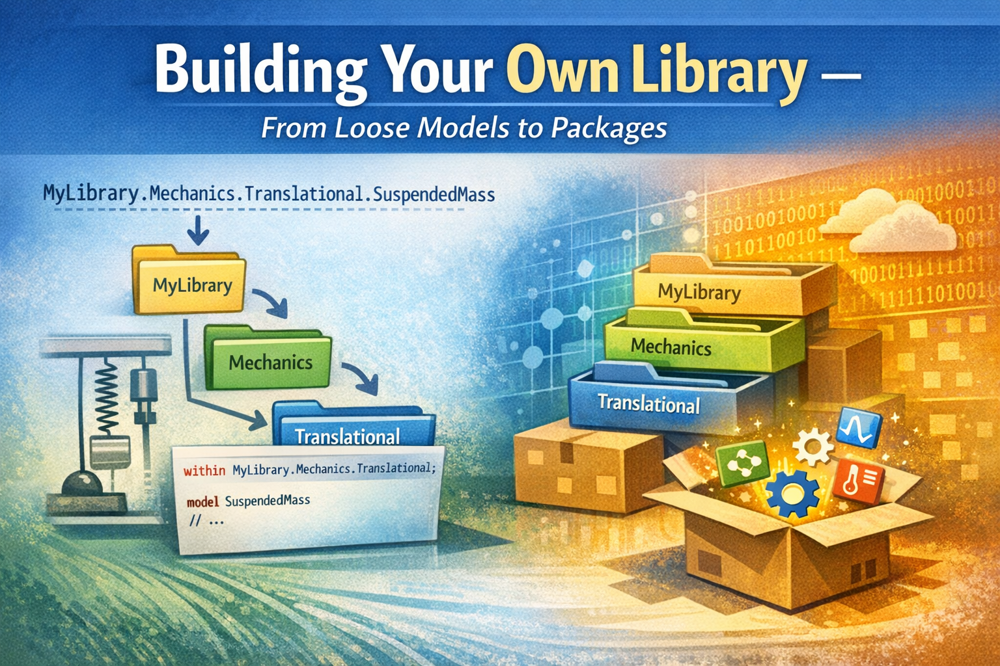
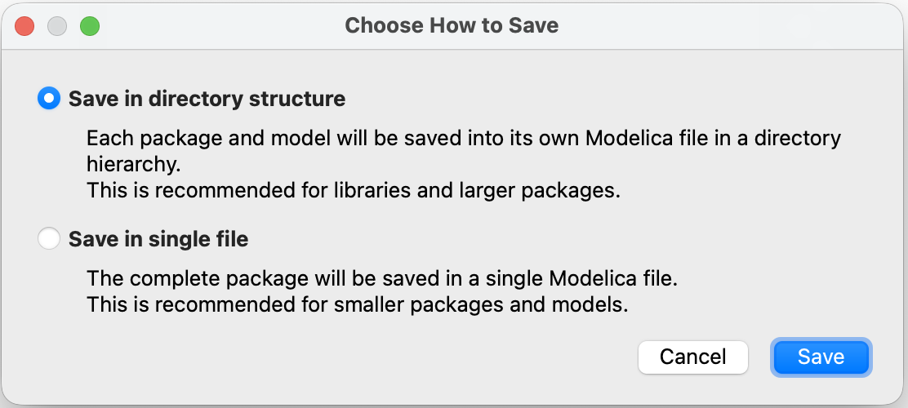
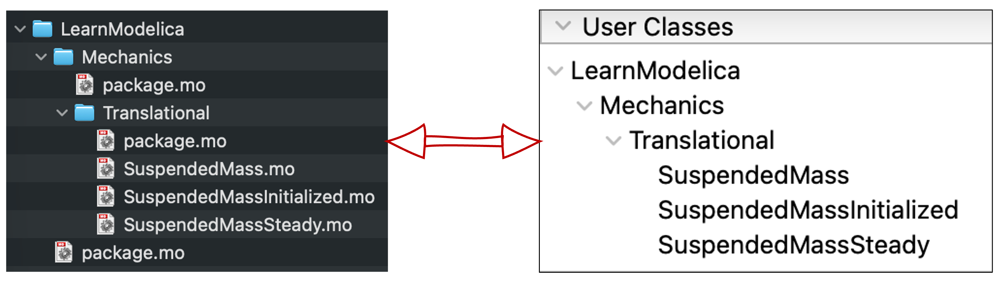

Building Your Own Library — From Loose Models to Packages

I hope you’ve got your preferred drink in hand ☕️🫖💧
Back in article 3, I introduced the MSL as “a package — read ‘folder.’” And we’ve been using dot notation ever since: Modelica.Units.SI.Temperature, Modelica.Constants.g_n… We never really stopped to think about what those dots mean.
They’re addresses. Modelica.Thermal.HeatTransfer.Components.ThermalConductor is like Europe.France.Paris.Arrondissement7.EiffelTower. Each dot is a level deeper. And the system that makes this work? Packages.
You’ve been using packages since day one. Today, you learn to build your own. 📦
What’s a package?
A package in Modelica is exactly what it sounds like: a container for models, connectors, functions, constants, and… other packages. It’s the organizational unit of Modelica.
The syntax is straightforward:
package MyLibrary "My first Modelica library"
// Models, sub-packages, constants... go here
end MyLibrary;That’s it. package PackageName … end PackageName;. If you know how to write a model, you know how to write a package. The difference? A package contains things. A model does things.
Nesting packages
Packages can contain other packages. That’s how you create structure:
package MyLibrary "My first Modelica library"
package Mechanics "Mechanical models"
package Translational "Translational mechanics"
// Models go here
end Translational;
end Mechanics;
end MyLibrary;And that is where the dot notation comes from! MyLibrary.Mechanics.Translational is the path through nested packages — just like Europe.France.Paris is a path through nested locations. Each dot = one level deeper.
Now you understand what Modelica.Thermal.HeatTransfer.Components.ThermalConductor means: the ThermalConductor model, inside the Components package, inside HeatTransfer, inside Thermal, inside the top-level Modelica package (the MSL). 🗺️
Packages = folders on disk… or not!
Here’s something that confused me at first: there are two conventions for writing Modelica libraries, and they look different on disk. But they both represent the same thing: packages.

Convention 1: Single file — Everything in one .mo file (like our examples above). Simple, but gets unwieldy for large libraries.
Convention 2: Directory structure — Each package becomes a folder, with a package.mo file inside. This is what real libraries use:
MyLibrary/
├── package.mo ← "package MyLibrary ... end MyLibrary;"
└── Mechanics/
├── package.mo ← "package Mechanics ... end Mechanics;"
└── Translational/
├── package.mo ← "package Translational ... end Translational;"
└── SuspendedMass.mo ← our model!Each package.mo file contains the package declaration. Each model gets its own .mo file inside the folder. Clean, organized, version-control friendly. Modelica packages map directly to your file system.
I will be blunt here: forget the single-file convention. It’s fine for tiny examples or for model export/sharing, but real libraries use the directory structure. If you want to build a library that others can use, follow the directory structure convention. It may seem like extra work at first, but it pays off in maintainability and usability, very quickly.
within: the address declaration
When a model lives inside a folder, it needs to declare its address. That’s what within does:
within MyLibrary.Mechanics.Translational;
model SuspendedMass "Suspended mass on a damped spring"
// ...
end SuspendedMass;The within statement at the top says: “I belong to MyLibrary.Mechanics.Translational.” It’s like writing your ZIP code on a letter — it tells the system exactly where this model lives in the package hierarchy.
Without within, the tool wouldn’t know where to place the model. With it, the model’s full address becomes MyLibrary.Mechanics.Translational.SuspendedMass. 📬
💡 Bottom line: Every
.mofile that lives inside a package folder should start with awithinclause. The top-levelpackage.mohaswithin;(with nothing after it — it’s at the root). And funny enough, you might never see thewithinkeyword! Most tools automatically add it when you create a new model inside a package. It’s “hidden” by the tool, and if you open the.mofile with a text editor, you’ll see it! So it’s good to understand what’s going on behind the scenes.
Three flavors of import
Writing Modelica.Units.SI.TranslationalSpringConstant every time you need a spring stiffness type is… exhausting. And we’ve been doing it since article 17. There has to be a better way.
There is. It’s called import. And it comes in three flavors.
Flavor 1: Qualified import (the rename)
import SI = Modelica.Units.SI;This creates a local shortcut: SI now means Modelica.Units.SI. You can then write:
parameter SI.Mass m = 10;
parameter SI.TranslationalSpringConstant k = 1000;
SI.Position x;Much shorter! You still see where things come from (SI.Something), but without the full path. It’s like saving a bookmark — short name, full address behind the scenes.
Flavor 2: Single import (the grab)
import Modelica.Units.SI.Mass;
import Modelica.Units.SI.Position;This imports individual elements by name. After this, you can write Mass and Position directly — no prefix needed:
parameter Mass m = 10;
Position x;Short and sweet. But you need one import line per element, which can get verbose if you use many types from the same package.
This is actually what we used in article 17 for the gravitational constant:
import Modelica.Constants.g_n;Which is a special case of single import: importing a constant directly by its full path.
Flavor 3: Wildcard import (the everything)
import Modelica.Units.SI.*;The .* grabs everything from the package. Now Mass, Position, Velocity, TranslationalSpringConstant — all available directly. No prefix, no individual imports.
Sounds convenient, right? It is. But there’s a catch: you lose traceability. When you read Mass in the code, you have no idea where it came from without checking the import. And if two packages both export a Mass type… name collision. 💥
Which flavor should you use?
| Flavor | Syntax | Readability | Convenience | Risk |
|---|---|---|---|---|
| Qualified | import SI = Modelica.Units.SI |
✅ Clear origin | Good shortcut | Low |
| Single | import Modelica.Units.SI.Mass |
✅ Direct name | One at a time | Low |
| Wildcard | import Modelica.Units.SI.* |
⚠️ Origin unclear | Very convenient | Name collisions |
My recommendation? Qualified imports for packages, single imports for individual elements. Use wildcards sparingly — they’re tempting but can bite you in larger projects.
🤓 Fun fact: Imports in Modelica are local. They only apply inside the model or package where they’re declared. So unlike some programming languages, an import in one model doesn’t “leak” into another. Each model is self-contained. Clean! But if you use the import at package level, it applies to everything inside that package. So you can have a
package.mowith imports that all models in that package can use. Handy for common dependencies.
Building our library
Enough theory. Let’s take the models we’ve built throughout this newsletter and organize them into a proper library. Here’s the plan:
We’ll create LearnModelica — a library containing our suspended mass models from articles 17, 18, and 22.
The target structure
LearnModelica/
├── package.mo
└── Mechanics/
├── package.mo
└── Translational/
├── package.mo
├── SuspendedMass.mo
├── SuspendedMassInitialized.mo
└── SuspendedMassSteady.moThree levels of packages, three models. Let’s write them.
You see how the folder structure is subjective? We could have added a
SuspendedMassespackage insideTranslationalto group the variants:Base, Initialized, Steady. Or we could have put the steady-state model in a separateSteadyStatepackage. There’s no right or wrong — just choose what makes sense to you and especially for your users. And by the way, I chose this structure to mirror the MSL’s structure. For the models of this newsletter, I will have to think further about how to organize them — per domain makes little sense, but maybe per concepts or per complexity level? We’ll see.
The top-level package
LearnModelica/package.mo:
within;
package LearnModelica "Models from the Learn Modelica & FMI newsletter"
annotation(Documentation(info="<html>
<p>A collection of example models built throughout the
<a href='https://dr-clementcoic.github.io/LearnModelicaFMI/'>Learn Modelica & FMI</a> newsletter.</p>
</html>"));
end LearnModelica;Notice within; with nothing after it — this is the root package. It has no parent.
The sub-packages
LearnModelica/Mechanics/package.mo:
within LearnModelica;
package Mechanics "Mechanical domain models"
end Mechanics;LearnModelica/Mechanics/Translational/package.mo:
within LearnModelica.Mechanics;
package Translational "Translational mechanics models"
end Translational;See how each within reflects the folder structure? Mechanics is within LearnModelica. Translational is within LearnModelica.Mechanics. The address matches the location. 📬
The models
Now our suspended mass from article 17 gets a proper home.
LearnModelica/Mechanics/Translational/SuspendedMass.mo:
within LearnModelica.Mechanics.Translational;
model SuspendedMass "Suspended mass on a damped spring"
import SI = Modelica.Units.SI;
import Modelica.Constants.g_n;
parameter SI.Mass m = 10 "Mass of the suspended body";
parameter SI.TranslationalSpringConstant k = 1000 "Spring stiffness";
parameter SI.Length L0 = 1 "Rest length of the spring";
parameter SI.TranslationalDampingConstant c = 30 "Damping constant";
SI.Position x "Position of the mass";
SI.Velocity v "Velocity of the mass";
SI.Acceleration a "Acceleration of the mass";
equation
a = -c/m * v - k/m * (x - L0) - g_n;
a = der(v);
v = der(x);
end SuspendedMass;Compare this to the version in article 17 — same physics, but now with within, cleaner import statements, and a proper address: LearnModelica.Mechanics.Translational.SuspendedMass.
The steady-state variant from article 18 goes right next to it in SuspendedMassSteady.mo — same within clause, same package, different model.

Maintaining the package order
When you have multiple “things” in a package and want to make sure they are listed in a specific order, there is a way to do it: together with package.mo, you can have a package.order file. This is a simple text file that lists the names of the “things” in the order you want them to appear in the tool’s browser. We’ll skip this for today for conciseness. Yet, feel free to check the MSL’s package.order files to see how they do it. For example, the top-level packages are organized as per this file.
Using our library
Once the library is loaded in your tool, anyone can use these models:
model TestBench
LearnModelica.Mechanics.Translational.SuspendedMass mass1;
LearnModelica.Mechanics.Translational.SuspendedMassSteady mass2;
end TestBench;Or with an import:
model TestBench
import LearnModelica.Mechanics.Translational.*;
SuspendedMass mass1;
SuspendedMassSteady mass2;
end TestBench;I used the wildcard import here to show that, when the names of the models are unique, it can be a convenient way to avoid long paths. But as mentioned before, use it with caution — especially in larger libraries where name collisions can happen.
And if you look at the MSL? It’s the exact same pattern. Modelica.Mechanics.Translational.Components.Spring lives in Modelica/Mechanics/Translational/Components/Spring.mo with within Modelica.Mechanics.Translational.Components; at the top. Our little library follows the same structure as the most widely used Modelica library in the world. Not bad! 😎
💡 Pro tip: Most Modelica tools have a “New Package” or “New Library” wizard that creates the folder structure and
package.mofiles for you. You don’t have to do it by hand. But now you understand what the wizard is doing behind the scenes — and you can fix things when they go wrong.
The END for today
Enough for today. Think about this: the MSL — the library used by thousands of engineers worldwide — follows the exact same structure we just built. Same package.mo files. Same within clauses. Same import statements. The difference? Theirs has a few more models. 😉
And if you want to read more “rigorous” content about this part of the Modelica language, check out the dedicated chapter of the Modelica Language Specification — it’s the official source for all things packages.
You’re now equipped to write models, organize them, and share them. Not a bad journey from that first commitment in article 1.
Break is over, go back to what you were doing.
Clem
Next ->
© 2025-2026 Clément Coïc — Licensed under creative commons 4.0. Non-commercial use only.